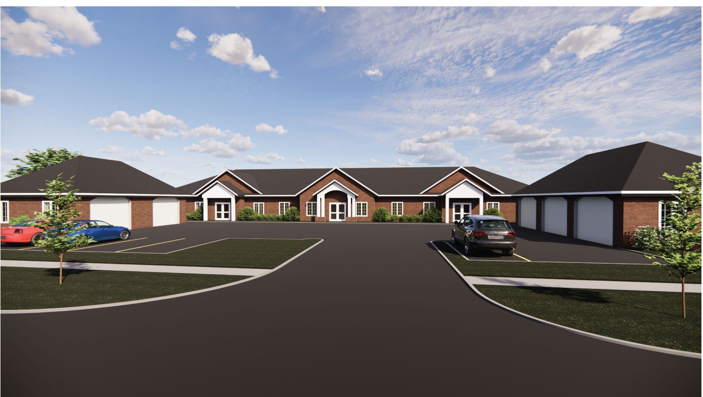
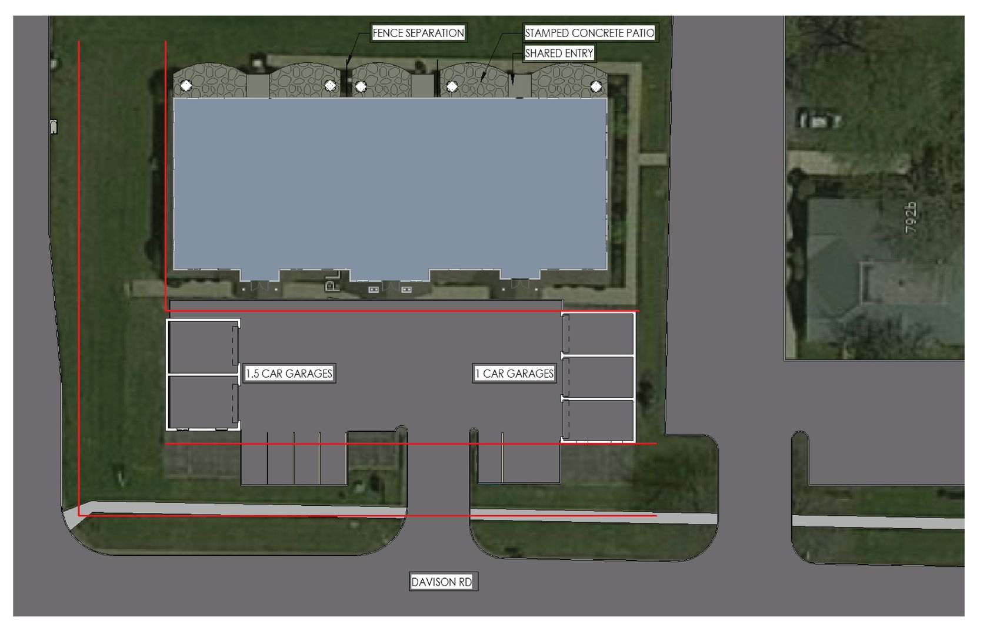
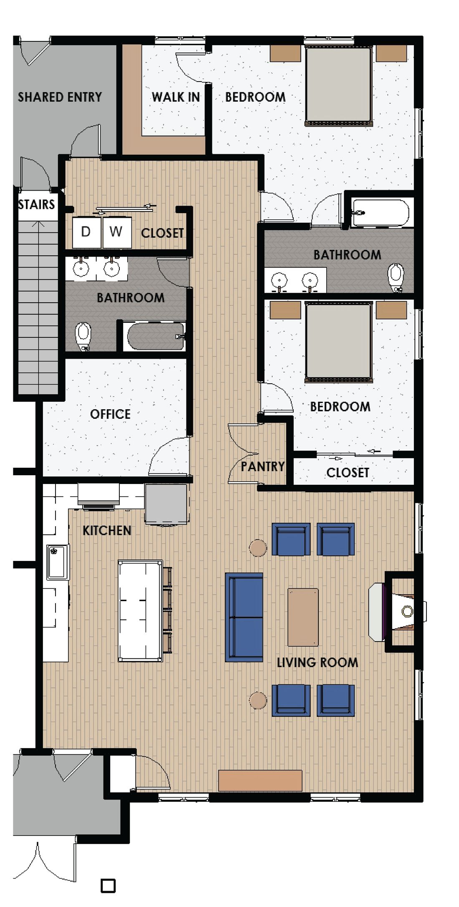
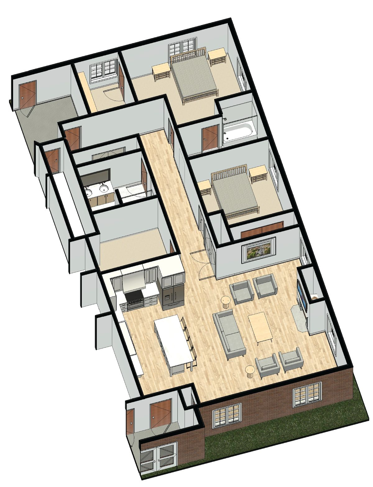
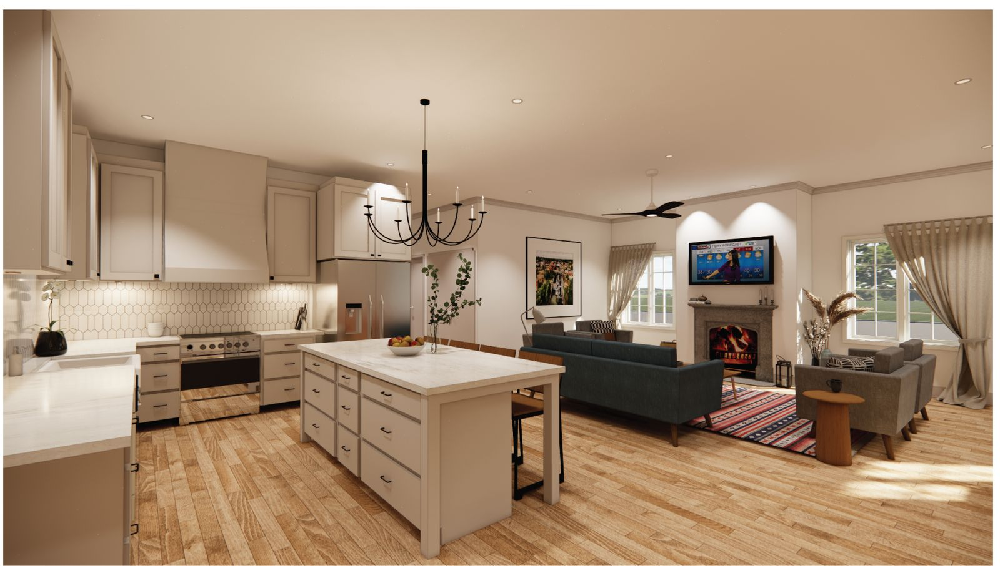
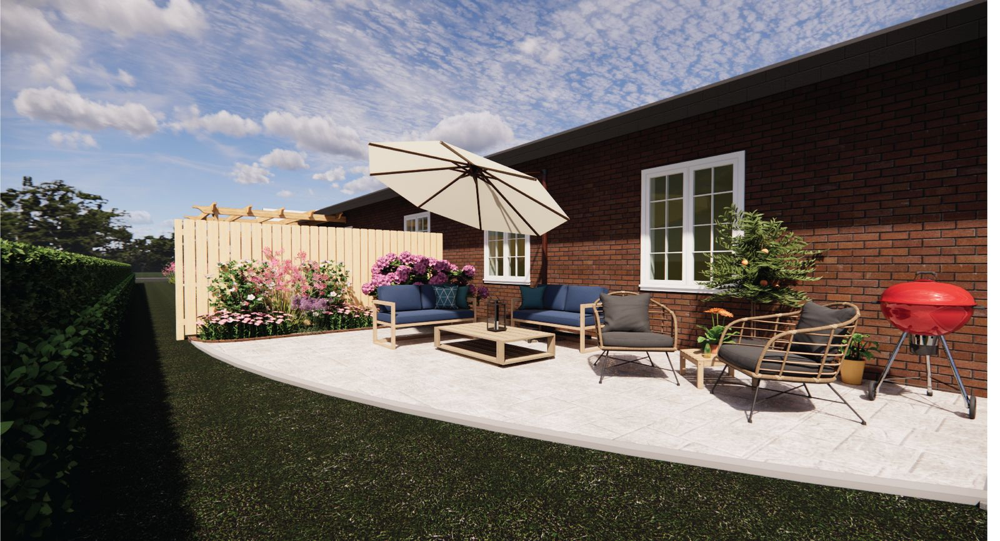

Davison Road: where things stand, and five paths forward
Based on the four court filings you sent, the concept design package for 770 Davison Road, and our own research into the record, the local coverage, the new council, and the state programs that touch this corridor.
Prepared for Corey HoganVersion 2.5 · September 2, 2026Discussion draft, not legal advice
The short version
The Article 78 was a real loss, but it was the hardest possible way to win: courts almost never overturn a citywide rezoning. What remains is a set of paths the lawsuit never touched, and the Waves concept package for 770 Davison Road strengthens two of them. Those boards do something no filing could. They turn the phrase that beat you in 2024, an apartment house, into single-story homes with attached garages, fenced patios and a two-bedroom-plus-office plan built for downsizers. That is the exhibit a zoning board and a council need to see, and right now it is sitting in a folder. It also unlocks the piece this effort has been missing: a campaign aimed at two audiences in the right order, neighbors before board members, held together by one public page that finally has something to show. Your corridor site still asks the council to restore the old zoning, still presents the lawsuit as the live remedy, still sells "condominiums and apartments" to the neighbors who organized against an apartment house, shows stock photography where the building should be, and calls Lockport a village. Meanwhile the appeal question from July is still unanswered: six months after entry we find no served notice of entry and no notice of appeal in the record, so the window is either still running or already gone, and only a docket check tells you which.
The record, in plain English
We reviewed the Verified Article 78 Petition (May 21, 2025), the City's Memorandum of Law in Opposition (November 3, 2025), your reply affirmation (November 5, 2025), the Order and Judgment (entered March 2, 2026), and the concept design boards for 770 Davison Road. Here is the arc they describe, checked against the public record:
When
What happened
Jan 2024
Davison Road Properties, LLC acquires eight parcels, about 38,000 sq ft, in the Lockport Professional Park corridor. Two of eight units tenanted; the broker letter in the record shows failed office marketing since 2021.
Apr 2024
The variance bid to convert 770 Davison Road, filed as an apartment house conversion in the B-4 district, draws roughly 50 neighbors in opposition; the ZBA tables it twice and the application is withdrawn. Important later: withdrawn, not denied.
Feb 2025
The City's draft zoning map designates the corridor Mixed-Use Neighborhood (MU-N), which would have permitted residential conversion.
Mar 26, 2025
The Common Council unanimously adopts the new Comprehensive Plan and Zoning Code (Local Law 1-2025), moving about 60 corridor parcels into a new Mixed Office (MO) district, which prohibits residential use. The same adoption passes over a separate request from the new owner of the former Eastern Niagara Hospital at 521 East Avenue to move that parcel from MU-N to MU-D for a five-story senior condominium conversion.
May 22, 2025
Article 78 filed (Index E187604/2025): spot zoning, arbitrary and capricious, SEQRA, and General City Law § 28-a claims.
Nov 26, 2025
Justice Frank Caruso hears argument and denies the petition from the bench.
Mar 2, 2026
Order and Judgment entered: petition denied in its entirety.
Sep 2026
Waves delivers a concept design package for 770 Davison Road: rendered site plan, street and exterior views, a unit floor plan, and interior renderings. Nothing in the set is dimensioned and no unit count is stated.
Sep 2, 2026
As of this draft we find no served Notice of Entry, no Notice of Appeal, and no reported council action on the MO district since the March 2026 moratorium retreat.
The 770 Davison drawings, and what they are worth
This is the material change since the July draft. The set is five presentation boards plus loose renderings, all titled 770 Davison Road and credited to Waves. It keeps the existing single-story building and converts it, rather than proposing anything taller or denser than what stands there now.

Exterior concept rendering. The existing office building keeps its footprint and single-story height; gabled entries and end garage banks give it a residential reading from the street. Renderings by Waves, supplied by Davison Road Properties.
What the set actually shows
A residential building, not an apartment block. Single story, brick, pitched roof, gabled entries, attached garages. Nothing in the massing reads as multifamily to a neighbor standing across the road.
Enclosed parking, split to both ends. The site plan labels a 1.5-car garage bank at the west end and a single-car bank at the east, five stalls drawn in total, with surface parking between them off Davison Road.
Private outdoor space with fenced separation. The rear elevation gets stamped concrete patios, one per unit, divided by fencing, with shared entries between paired units.
A plan aimed at downsizers. Two bedrooms, two full baths, a walk-in closet, a separate office, in-unit laundry, pantry, and an open kitchen and living room. This is the plan that competes with a house, not with a rental block.

Rendered concept site plan. Patios and shared entries along the rear, garage banks split to either end, parking court off Davison Road.

Unit plan: two bedrooms, two baths, office, in-unit laundry.

The same unit in cutaway. No board in the set is dimensioned.

Kitchen and living room.

Private patio with fence separation.
Why this matters more than it looks
It renames the project. In 2024 the ask was a variance to turn an office building into an apartment house, and roughly 50 neighbors came out against that sentence. These drawings describe attached single-story homes with private garages and yards. Same building, entirely different thing to argue about.
It does the narrowing that a use variance needs. The honest risk we flagged in July was the uniqueness factor: hardship shared across a 60-parcel corridor is not the kind § 81-b rewards. An application anchored to one building with a drawn scheme, a stated unit count and a building-specific pro forma is narrow by construction, and it is much harder for the City to answer with "everyone here has the same problem."
It gives the council something to vote for. A text amendment allowing residential by special use permit is an abstraction until an alderman can see what would show up. These boards let a council member defend a yes to their own ward.
It answers the 2024 objections on their own terms. No added height, parking enclosed and on site, patios fenced, the building visible from Davison Road looking like the neighborhood behind it.
What the boards do not yet answer
Every one of these has to be settled before anything gets filed or published, and all of them are questions for Waves and for you, not for us:
Unit count. Five patios and five garage stalls are drawn, but no board states a number. The floor plan also shows stairs off the shared entry, which could mean a lower level or a second unit above. A variance application has to state a count and defend it, and the count drives parking, density and the whole pro forma.
Square footage and mix. Nothing is dimensioned. Are all units the two-bedroom-plus-office plan, or is there a mix?
Ownership or rental. Your site says condominiums and apartments both, the 2024 application said apartment house, these drawings read as either. Pick one and use the same word everywhere, because the two get very different receptions in a council chamber.
Parking math. Five garage stalls plus the surface court, against what the code actually requires for the unit count you land on.
The garages. They appear to be new construction. That raises lot coverage, setbacks and stormwater under the current MO district, all of which a board will ask about.
Cost and pro forma. Renderings without numbers do not carry a dollars-and-cents hardship case. The § 81-b test needs a return analysis for every use the MO district permits, and a conversion cost for this scheme.
Publication rights. Before any of these images go on a website, in a press packet or into a council presentation, confirm in writing what Waves has licensed you to publish.
Whether the scheme ports. 770 is one of eight buildings. Does this plan work in the others, or is 770 the only one that takes it? That answer decides whether you lead with a variance on one building or a text amendment for the district.
Where we believe you stand
An honest read, including the parts that cut against you, because the strategy only works if it is built on the full picture.
What is working against you
The legal standard, not the facts, decided the case. A rezoning by a common council is a legislative act. Courts presume it valid and sustain it if its consistency with the comprehensive plan is even debatable. That same deference applies on appeal, which is why we put reversal odds low even though the equities read well.
The prior zoning did not permit residential either. The old B-4 district also barred conversion; the February 2025 draft map was the thing that would have changed that. This weakens the framing that the City took away an existing right, and it is close to fatal for a federal takings claim, since your investment-backed expectation at purchase was a property where residential already required a variance.
The neighbors have shown up twice. In 2024 against 770 Davison, and back in 2020 against the infirmary-site housing proposal at 102 Davison. Corridor-adjacent opposition is organized and the council knows it votes.
The procedural story has now been tested and lost. The claim that the rezoning happened without notice, hearing or review was the heart of the petition, and the court denied it in its entirety. Any public argument that still leads with process hands the City a one-sentence answer.
The medical anchor is not there. Our July read had the new hospital re-anchoring the corridor. You corrected that on September 2 and the map backs you up. The facility to the north is the closed Eastern Niagara Hospital at 521 East Avenue, 200,000 square feet vacant since June 2023, and it is 2.1 miles from 770 Davison by road. Lockport Memorial is 3.8 miles the other way by road, at 6001 Shimer Drive off South Transit Road, and it is small by design. Catholic Health described it at opening as an eighteen-bed emergency department with a ten-bed inpatient unit that can expand to twenty; a later Catholic Health snapshot puts the emergency department at twenty. Catholic Health also put its own multi-specialty center inside that building, with cardiology, orthopedics, OB-GYN, surgery, pulmonary, vascular and primary care all on the hospital campus. The satellite demand a hospital normally pushes into nearby offices was absorbed on site, an eight-minute drive across town from you. So medical tenancy is not a plan for these buildings, which cuts against Option 4 as we first wrote it and strengthens Options 2 and 3: the City zoned this corridor for a tenant base that no longer exists.
What is working for you
You now have a picture, and the other side does not. Vacancy arguments and tax arithmetic are abstractions that a resident can wave off. A rendered street view of what replaces the empty building is the single most persuasive object in a land-use fight, and until this month you did not have one.
A court has already found the hardship real. The tax certiorari judgment cutting the assessment from over $3 million to roughly $848,000 is a judicial finding that these buildings cannot perform as offices. That is unusually strong dollars-and-cents evidence for a use variance, and a standing argument to the City about what the status quo costs its own tax base.
The City's own plan argues your side. The 2024 Comprehensive Plan identifies a citywide housing need and endorses adaptive reuse of aging commercial corridors. State law (General City Law § 28-a) requires zoning to accord with the plan. A text amendment restoring residential here would implement the plan; the current MO district sits in tension with it.
Lockport is a certified Pro-Housing Community. We checked this against the State's own data rather than the coverage. The two datasets behind HCR's Pro-Housing dashboard both say so: the tracking file dated January 2025 carries Lockport city, Niagara County, as Certified, and the September 2025 certified-municipality list includes Lockport (City). Both are linked in the sources below so your counsel can pull the same lines. One caveat before anyone puts it in a letter to the City: the newest state file we can reach is a year old, so confirm the certification is still current on the dashboard first. That certification is a prerequisite for major state discretionary funding, and the state's own permit data shows the city issuing almost no housing. A city that holds a pro-housing certification while banning housing in the one corridor with a willing converter has a story problem you can use respectfully but firmly.
The council has changed. Three of the six aldermen who cast the March 2025 vote are gone. The 2nd Ward, which contains Professional Parkway, is now held by Marcus Wyche (D). The mayor, a named respondent, is publicly feuding with his own council and faces election in 2027. A petition to this council is not a rerun of the last one.
Public pressure demonstrably moves this council. In March 2026 the council proposed a six-month moratorium on larger multifamily projects. Residents and development interests packed the meeting, and the council tabled it 4 to 1, the council president casting the only vote against tabling. We find no sign of it being taken off the table in the six months since, so tabling appears to have ended it. The playbook that stopped the moratorium is available to the Davison Road story too.
The City's own lawyer has pointed at the variance route in public. The former Eastern Niagara Hospital at 521 East Avenue sold in October 2024 to an owner who wants senior condominiums over a restaurant and a small grocery. His obstacle is not yours: that parcel is Mixed-Use Neighborhood, which allows the residential, and what he asked for during the March 2025 adoption was a move to Mixed-Use Downtown to fit the building's five stories. The council adopted the code without that change. The part worth keeping is what the deputy city attorney told the Union-Sun & Journal about his fallback: "There's definitely some elements in his favor for receiving a use variance." That is the City's own lawyer, on the record, pointing a large vacant former-medical building toward the ZBA. Useful to have in the file before you file, and useful to know another owner may end up at the same board on a related question.
Lockport's rental market is tight. Roughly 3 percent vacancy, with the comprehensive plan itself acknowledging the housing need. The demand side of your conversion thesis has only strengthened.
Options to consider, in the order we would run them
These are numbered in sequence, not by preference, because the early ones are cheap and preserve leverage for the later ones. They are also not mutually exclusive; the strongest posture runs several at once.
1
Settle the appeal question, six months after entry and still unanswered
Do nowCost: minimalOdds of reversal: lowValue: leverage
In New York the 30-day window to appeal runs from service of the judgment with notice of entry, not from entry itself, and the automatic NYSCEF notification does not count as service. If the City's counsel never filed and served a formal Notice of Entry after March 2, 2026, the window may still be open today, six months on. We flagged this in July and we still find no served notice and no notice of appeal in the public record, which means the question has not been answered, not that the answer is good. It needs a direct NYSCEF docket check by your counsel on E187604/2025, and it is the one item on this list with a clock.
If the window is open, filing a notice of appeal is inexpensive, buys six months to perfect, and keeps every negotiation below alive. Order the November 26 transcript either way; the bench ruling has to be settled into the record, and its reasoning shapes everything else. We would treat the appeal as leverage rather than the plan: reversal odds against a legislative act are low, with the comprehensive-plan inconsistency argument the most promising thread.
2
File a fresh use variance on 770 Davison, with the drawings attached
Now materially strongerCost: moderateTimeline: monthsOdds: real but contested
Because the 2024 application was withdrawn rather than denied, a use variance under General City Law § 81-b is procedurally fresh. Three of the four factors line up well: the tax judgment and broker history are exactly the dollars-and-cents proof boards demand; residential conversion beside residential neighborhoods is an easy neighborhood-character argument; and the hardship, a market-wide collapse in suburban office demand, is not of your making.
The uniqueness factor was the honest risk, since the statute disqualifies hardship shared by a substantial portion of the district and vacancy afflicts much of the 60-parcel corridor. The design package is the answer to it. Applying on 770 alone, with a drawn scheme specific to that building's size and configuration, makes the application about one property rather than about a corridor. Pair it with a return analysis for every use the MO district permits and you have the record § 81-b asks for. Even a denial improves your posture: a ZBA denial is reviewed less deferentially than a council's legislative act.
One thing to handle head-on. This board saw the 2024 file and remembers the room. Lead the new application with what changed: the drawings, the ownership or rental decision, the parking, and the fact that the buildings have now sat empty for two more years. Do not re-argue 2024.
3
Petition the new council for a text amendment
Highest expected valueCost: low to moderateTimeline: 6 to 18 months
Ask the council to amend the MO district to allow residential conversion by special use permit. That framing matters: it does not ask them to admit error or rezone the map, it gives them case-by-case control, and it lets them say yes to the buildings while keeping standards for the neighbors. The pitch writes itself from the City's own documents: the comprehensive plan calls for adaptive reuse and more housing; the Pro-Housing certification the City sought now gates its access to state money; and the corridor's collapsing assessments are a recurring hole in the City's budget that your reinvestment would fill.
Bring the boards. A council votes on a picture more readily than on a principle, and the special-use-permit framing plus a rendered example of what a permit would produce is a much smaller ask than it sounds. The audience is different now: three new aldermen, a Democrat holding your ward, a council president who has shown he responds to organized rooms, and a 2027 election on the horizon. The March 2025 vote was unanimous; the March 2026 moratorium retreat shows the current council counts heads.
4
Make the other buildings earn under the zoning you have
No approvals fight neededCost: leasing + capitalTimeline: starts now
Revised after your September 2 note. The July version of this section led with a medical cluster off the new hospital, and you were right to knock that down: the hospital is small, it is across town rather than up the road, and Catholic Health built its specialty offices inside it. Physician satellites are not coming to Davison Road in any quantity, so this option is smaller and slower than we first described it.
What is genuinely left under MO, which permits neighborhood-scale offices plus retail, entertainment and service uses: childcare, where single-story buildings with surface parking are close to ideal, though the state money here is narrower than it looks: the OCFS and DASNY capital program that awards $500,000 to $5 million is open only to not-for-profit and municipal operators, and its 2026 round closed to applications on March 13 with awards already published. You would not be the grantee in any case. The play is a not-for-profit operator as your tenant, positioned for a future round, which is a reason to start those conversations now rather than a reason to expect a check; Niagara County itself, whose seat is Lockport and which leases service space; and the ordinary corridor tenants, meaning contractors and trades offices, insurance, title, small professional firms, salon suites, wellness operators, veterinary and training space. Expect these one at a time over a few years, not as a cluster. And if the 200,000 square feet at 521 East Avenue ever comes back to market as anything, it lands on top of the same small pool of tenants.
Financing exists for this today: both the City of Lockport and Niagara County participate in Open C-PACE, which can finance up to 100 percent of energy-related renovation (HVAC, roofs, envelope) on 1980s buildings that need new systems regardless of use. The Niagara County IDA's sales-tax and mortgage-tax exemptions apply to renovation. Restore NY funds commercial rehab as well as conversions, though the City must sponsor the application, which becomes realistic if Option 3 thaws the relationship. The 2026 state CFA round closed July 31, so ESD capital grants are a 2027 application, best made with an anchor tenant already signed.
This option is not a surrender of the residential thesis, and it is worth running even at your expectations for it. Occupied buildings carry themselves while Options 2 and 3 run, and every signed tenant strengthens the story that you are investing in the corridor the City abandoned. It also fits the design package rather than competing with it: convert 770, lease the rest. One discipline to add, because it is free and it compounds. Log every MO-permitted use you market to, every rate quoted and every no, in writing, with dates. If the leasing goes the way you expect, that log becomes the return analysis General City Law § 81-b asks for, which is the single hardest exhibit to produce after the fact. A failed leasing year that is documented is worth more to Option 2 than an undocumented good one.
5
Know your exit numbers, even if you never use them
Cost: minimalValue: a floor under every decision
If exiting ever becomes the answer, selling building-by-building to owner-users (contractors, service businesses and small professional firms using SBA financing at 51 percent occupancy) will almost certainly beat a bulk portfolio sale, which prices at distressed-investor levels. The regional land bank is a last-resort floor, not a market. Worth quantifying now simply so every negotiation with the City happens against a known walk-away number. Time also runs in your favor here: each year of corridor vacancy costs the City tax revenue and strengthens your seat at the table.
What we would not spend money on
A federal regulatory takings suit. The MO district still permits office, retail, and service uses, so there is no total wipeout; the buildings were purchased when residential already required a variance, which guts the investment-backed-expectations factor; and the Article 78 judgment gives the City preclusion arguments. Low odds, real cost, and it hardens the very relationship Options 3 and 4 depend on.
The campaign: two audiences, one page
The March 2026 moratorium fight is the most instructive event of the past year. This council reverses course when the room fills and the story is clear. That cuts both ways, because in 2024 the room filled against you. So the order matters more than the content: the neighbors have to move before the board does. An alderman who is asked to allow housing in a corridor where fifty residents showed up in opposition needs cover, and the only people who can give it are those same residents. Run the council track first and you get the 2024 meeting again, with better drawings.
The sequence we would hold to
Neighbors first, quietly and in person. Then supportive letters and a handful of named residents willing to speak. Then one-on-one briefings with the aldermen and the ZBA. Only then the public filing and the public meeting. The test of whether the first phase worked is simple and it is not a metric: it is who stands up at the first hearing.
Track one: the neighbors
Who they are: the notice radius on Davison Road and Professional Parkway, the residential streets directly behind the corridor, and specifically the people who turned out in February and March of 2024. What they objected to was never the tax base. It was traffic, transience, density, and the words "apartment house." The drawings answer every one of those, but only if the drawings reach them before the hearing notice does.
Lead with their problem, not yours. Their live complaint about these buildings is the same one your own site names: vacancy, vandalism, dumping, and what an empty office park does to the value of the house next to it. That is the opening. Your zoning grievance is not.
A mailed piece with the street view on the front. One page. The rendering, then the plain facts: same building, same height, single-story homes rather than an apartment block, every car in a garage or on site, fenced private yards. Put the unit count on it as well, but only once Waves states one in writing. Five patios and five garage stalls are drawn on the boards; that is not a unit count, and it must not become "five homes" in a piece mailed to the people who beat this application in 2024. No legal argument anywhere on it.
An open house in one of the empty buildings. Boards on easels, coffee, no podium, no presentation. People walk in, look, and ask. This is the cheapest and highest-leverage thing on the entire list, and it is the one that turns a rendering into a conversation. Do it before anything is filed.
Knock on the closest thirty doors yourself. Not a mailer, not a consultant. The owner. In a city this size that is the whole ballgame.
Get three neighbors on the record in favor. Three named residents in support breaks "the neighborhood is united against this," which is the single sentence that did the most damage in 2024.
Decide ownership or rental before you knock. "Condominiums people will own" and "apartments people will rent" get very different receptions on a residential street, and you cannot say one at the door and the other at the podium.
What not to do: do not lead with the lawsuit, do not argue that the City acted improperly, and do not put the City's lost tax revenue in a neighbor-facing piece. Residents do not experience the municipal budget. They experience the empty building at the end of their street.
Track two: the people who have to vote
Two bodies, and they need different things. The Common Council would take the text amendment; the Zoning Board of Appeals would take the variance. Both need a way to say yes that does not require anyone to say the March 2025 vote was wrong.
Brief them one at a time, before anything is public. Six aldermen, starting with Marcus Wyche, whose 2nd Ward holds the corridor. Never surprise a council member in a room; a member who learns about your ask from the agenda is a no.
Hand them the language. Draft the actual text amendment, residential conversion by special use permit in the MO district, in the form the city attorney would need. Councils move on things that arrive already written.
Give them the cover story, and make it flattering. The amendment implements the comprehensive plan they adopted. It protects the Pro-Housing certification the City sought and the state funding that now depends on it. It puts a collapsing corridor back on the tax roll. It keeps case-by-case control in their hands through the permit. None of that requires anyone to admit error.
Bring the boards to every meeting. An abstraction is hard to vote for and easy to vote against. A member who can show a constituent a picture of what a permit would produce can defend the vote at the next block party, which is the actual thing they are worried about.
Work the bodies around them too. The planning board and city planner shape what reaches the council, Niagara County and the NCIDA have their own interest in the corridor's assessed value, and HCR has a stake in whether a Pro-Housing community is producing housing. Each is a separate short conversation.
Go to the coalition that already beat this council once. The residents and development interests who packed the March 2026 moratorium meeting have proven they can move these six votes. They are not automatically your allies, and it is worth finding out.
Time it to their calendar and their clock. Council meeting cycle for the ask, and a 2027 election that makes a corridor with a plan more attractive to run on than a corridor with a lawsuit.
Everything in this track runs through your counsel before it goes out, given where the litigation posture sits.
Track three: the page that holds all of it
Yes, build it. Build it on davisonroadestates.com rather than on a new domain. Your site already carries the history, and a brand-new site launched to support a zoning ask reads like astroturf to exactly the reporters and officials you want reading it. But it needs a rebuild rather than an edit, and the order matters: nothing goes in a neighbor's mailbox while the site still contradicts the mailer. If the rebuild cannot happen before the outreach starts, take the site down until it can. A dark domain costs you nothing at this stage. A live one making last year's argument in last year's vocabulary hands the opposition its opening paragraph. We went through it line by line on September 2 and it is currently the weakest link in the whole effort.
The headline numbers render as blanks. The home page shows "$ in Community Benefit" with no figure and a bare "6" under it; the Issue page has a "%" and an "Annual Tax Revenue Lost" heading with nothing beneath them. The counters are simply empty. Every visitor lands on a hole where the argument should be.
It calls Lockport a village, twice. Lockport is a city, and the readers you want will notice in the first paragraph.
It is stuck in 2025. The copyright line says 2025 and the site still describes the lawsuit as newly brought. The judgment entered in March. The ruling itself went unreported locally, which means your own site is where most people would go to learn what happened, and it does not say.
It is still asking for last year's remedy. The Issue page has you urging the Common Council to restore the Mixed-Use Neighborhood designation across the 60 parcels, and it presents the Article 78 petition as the live remedy, "the core legal action asking the court to overturn the City's sudden rezoning." Both are finished. The map restoration is the one ask that requires this council to admit it got the code wrong, which is exactly what the special-use-permit route in Option 3 is designed to avoid, and the petition was denied in its entirety in March. As it stands, your own website argues against your own strategy, and any alderman who reads it before you brief them will think the ask is still a rollback of their vote.
It will not pick a word, and the word is what beat you in 2024. The home page promises "modern condominiums and apartments that offer both ownership and rental options." The Estates page offers "the comfort of homeownership or the convenience of renting." Neighbors organized against an apartment house. You cannot mail those neighbors a piece about single-story homes while the site behind it still says apartments and rentals, because the first person to check will find the contradiction and it will define the meeting. Decide ownership or rental, decide the noun, and make every page, the mailer and the application use it.
It leads with the argument that lost. No mailed notices, no neighborhood meetings, no public conversation: that is the process case the court rejected in its entirety. The outcome case is still true and much harder to answer. Housing is illegal in this district, the buildings are empty, the assessments have collapsed, and the plan adopted that same night calls for the reuse the code now forbids. One caution on wording: do not write that MO is the only district in the city banning housing until someone reads Chapter 190 district by district, because the industrial districts appear to bar dwellings too. The argument does not need the superlative and the superlative is what a city attorney would correct in public.
The numbers do not reconcile across your own documents. The site says the corridor falls from $50 million to $20 million and costs the City $1.6 million a year. The petition puts your parcels at over $3 million down to roughly $848,000, and the reply affirmation cites $7.5 million to $1.4 million. Publish one sourced set and use it in every filing, letter and page.
There is no drawing of the scheme, and stock photography is standing in for one. The site is not imageless: it carries the two zoning maps, a timeline graphic and thumbnails of filed exhibits A through F. What the Estates page shows for the project itself is stock photography and unlabeled interiors that are not 770 Davison. Two of the files are still served under their Shutterstock filenames, and the rest are captionless bedroom, basement, backyard and exterior shots. A neighbor who reverse-image-searches one of those finds a stock library, and the argument that you are serious about this building takes the hit. The Waves boards are the fix: a labeled 770 Davison scheme, credited, replacing every generic image on that page. While you are in there, none of the twenty-nine images across the three main pages carries alt text, which is both an accessibility gap and the reason an AI summary of your own site cannot describe what it shows.
It wears two identities, and the front one is the problem. We said in an earlier draft that the site is anonymous. That was wrong and worth correcting: the Issue page names you five times, as "Corey Hogan, owner of Davison Road Properties LLC," and lists the Affidavit of Corey J. Hogan among the exhibits. The trouble is the front door. The home page is signed "Organization for the Revitalization of Lockport," an entity with no names, no address and no explanation, which appears nowhere on the Issue page it links to. So a visitor meets a citizens' organization, clicks once, and finds the property owner's petition. That gap is precisely the astroturf accusation your opponents would reach for, and it is self-inflicted. Pick one voice. The owner asking openly is ordinary and legitimate; the unexplained organization on top of it is what looks arranged.
Copy errors undercut it. "Becasue," "have sat in active" where inactive was meant, "the area's value will dropped." Small, but they read as unserious to the audience you most need.
The rebuild we would do gives it three front doors, because the two campaigns above want different things from the same facts:
For neighbors. What it looks like, what changes and what does not, parking, traffic, who would live there. Renderings first, plain language, a real FAQ that answers the 2024 objections by name.
For the City. The comprehensive plan's own language, the assessment and tax arithmetic with sources, the Pro-Housing angle, and the draft amendment text as a download.
The record. The filings, the ruling, and the timeline stated plainly, including the loss. Publishing the loss is a credibility asset. A site that only tells the winning half is the first thing an opponent points at.
Plus a dedicated project page for 770 Davison carrying the full design set and, once Waves supplies them, the unit count, square footage and cost. That FAQ and project page are also what make the story surface in AI search and in a reporter's first query, which is the part of this we do at Doble AI. The same material feeds Option 4: the corridor story that moves a council member also reaches the childcare operator or the county agency weighing space on this corridor.
What we would do in the next 30 days
Counsel pulls the NYSCEF docket for E187604/2025: was a Notice of Entry served, and is the appeal window open? File a notice of appeal if it is. Order the November 26 transcript regardless. This has been open since July.
Go back to Waves for the missing numbers: unit count, square footage and mix, parking, whether the garages are new construction, and a conversion cost. Confirm in writing what you may publish.
Decide ownership or rental, and use one word for it at the door, in the application, on the site and at the podium.
Commission the building-specific pro forma for 770 that the § 81-b test requires, covering every use the MO district permits.
Rebuild davisonroadestates.com around the three front doors: fix the empty counters, correct village to city, retire the unexplained "Organization" and let the owner speak in his own name, drop the restore-the-map ask and the process claims, state the ruling, settle on one word for what gets built, reconcile the numbers, and replace the stock photography with the labeled 770 Davison scheme. Nothing mails to neighbors until that is done or the site is dark.
Book the open house. One of the empty buildings, boards on easels, the closest streets invited by mail, before anything is filed.
Draft the text amendment (residential by special use permit in MO) in the form the city attorney would need, and start the one-on-one alderman briefings with Wyche.
Start the leasing track on the other buildings: a broker push aimed at childcare, county and service tenants, with C-PACE and IDA incentives packaged into the offer, and a written log of every approach and every no.